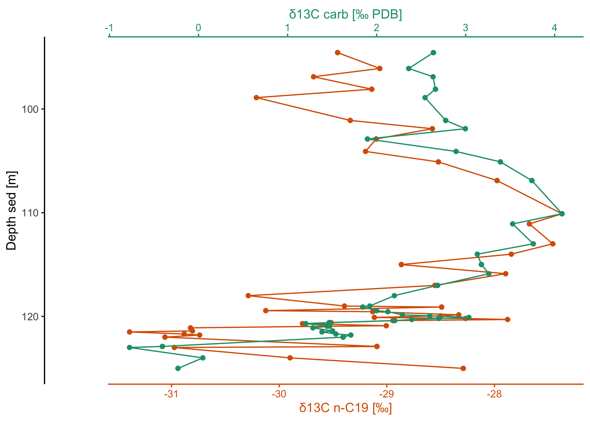

About
Have you ever wanted to create (partly) overlapping line plots with matched color-coding of the data and axes? These kinds of plots are common, for example, in climatology and oceanography research but there is not an easy way to create them with ggplot facets. The ggstackplot package builds on ggplot2 to provide a straightforward approach to building these kinds of plots while retaining the powerful grammar of graphics functionality of ggplots.
Installation
To install the current release from CRAN:
You can also install the development version of ggstackplot from GitHub with:
Show me some code
library(ggstackplot)
# using R's built-in mtcars dataset
mtcars |>
ggstackplot(
# define shared x axis
x = mpg,
# define multiple y axes
y = c("weight" = wt, "horsepower" = hp),
# set colors
color = c("#E41A1C", "#377EB8"),
# set to complete overlap
overlap = 1
)
Show me some climate data
# download a recent dataset from the public climate data repository PANGAEA
dataset <- pangaear::pg_data(doi = "10.1594/PANGAEA.967047")[[1]]
# show what some of these data look like
dataset$data[
c("Depth ice/snow [m] (Top Depth)",
"Age [ka BP]",
"[SO4]2- [ng/g] (Ion chromatography)")] |>
head() |> knitr::kable()| Depth ice/snow [m] (Top Depth) | Age [ka BP] | [SO4]2- [ng/g] (Ion chromatography) |
|---|---|---|
| 160.215 | 1.20662 | 52.00 |
| 160.183 | 1.20300 | 165.00 |
| 160.151 | 1.20276 | 93.50 |
| 160.022 | 1.20191 | 42.25 |
| 159.990 | 1.20155 | 74.50 |
| 159.958 | 1.20130 | 104.50 |
These data were kindly made available on PANGEA by Sigl et al. (2024).
Full citation:
Sigl, Michael; Gabriel, Imogen; Hutchison, William; Burke, Andrea (2024): Sulfate concentration and sulfur isotope data from Greenland TUNU2013 ice-core samples between 740-765 CE [dataset]. PANGAEA, https://doi.org/10.1594/PANGAEA.967047
Vertical stack plot:
# visualize the data with ggstackplot
dataset$data |>
ggstackplot(
x = "Age [ka BP]",
y = c(
# vertical stack of the measurements through time
"sulfate [ng/g]" = "[SO4]2- [ng/g] (Ion chromatography)",
"δ34S [‰]" = "δ34S [SO4]2- [‰ CDT] (Multi-collector ICP-MS (MC-IC...)",
"Δ33S [‰]" = "Δ33S [SO4]2- [‰ CDT] (Multi-collector ICP-MS (MC-IC...)"
),
# color palette
palette = "Dark2",
# partial overlap of the panels
overlap = 0.4
)What about horizontal stacks?
# download some more data from PANGAEA
dataset2 <- pangaear::pg_data(doi = "10.1594/PANGAEA.933277")[[1]]
# show what some of these data look like
dataset2$data[
c("Depth sed [m]", "Comp", "δ13C [‰ PDB] (mean, vs. VPDB)")] |>
head() |> knitr::kable()| Depth sed [m] | Comp | δ13C [‰ PDB] (mean, vs. VPDB) |
|---|---|---|
| 120.205 | C17 | -28.185 |
| 120.205 | phytane | -27.032 |
| 120.205 | C19 | -28.268 |
| 120.205 | C21 | -27.901 |
| 120.205 | C27aaa20R | -29.707 |
| 120.205 | C28aaa20R | -28.194 |
Full citation:
Boudinot, F Garrett; Kopf, Sebastian; Dildar, Nadia; Sepúlveda, Julio (2021): Compound-specific carbon isotope results from the SH#1 core analyzed and processed at University of Colorado Boulder [dataset]. PANGAEA, https://doi.org/10.1594/PANGAEA.933277
Horizontal stack plot:
library(dplyr)
library(ggplot2)
# use a custom template for this plot
my_template <-
# it's a ggplot
ggplot() +
# use a path plot for all (to connect the data points by depth!)
geom_point() + geom_path() +
# we still want the default stackplot theme
theme_stackplot() +
# depth is commonly plotted in reverse
scale_y_reverse()
# now make the horizontal stack through depth for 2 of the variables
dataset2$data |>
filter(Comp == "C19") |>
arrange(`Depth sed [m]`) |>
ggstackplot(
x = c(
"δ13C carb [‰ PDB]",
"δ13C n-C19 [‰]" = "δ13C [‰ PDB] (mean, vs. VPDB)"
),
y = "Depth sed [m]",
palette = "Dark2",
overlap = 1,
template = my_template
)
# or show them side by side (note that this could also be achieved with
# ggplot facets except for the fine-control and coloring of the different x-axes)
dataset2$data |>
filter(Comp == "C19") |>
arrange(`Depth sed [m]`) |>
ggstackplot(
x = c(
"δ13C carb [‰ PDB]",
"δ13C n-C19 [‰]" = "δ13C [‰ PDB] (mean, vs. VPDB)"
),
y = "Depth sed [m]",
palette = "Dark2",
# no more overlap
overlap = 0,
# fine-tune the axes to be on top and bottom
both_axes = TRUE,
template = my_template
)Show me more
# using the built-in economics dataset in ggplot2 to create a vertical stacke of
# double axis plots using many of the customization features available with
# ggstackplot and ggplot2
ggplot2::economics |>
ggstackplot(
# define shared x axis
x = date,
# define the stacked y axes
y = c(pce, pop, psavert, unemploy),
# pick the RColorBrewer Dark2 palette (good color contrast)
palette = "Dark2",
# overlay the pce & pop plots (1), then make a full break (0) to the once
# again overlaye psavert & unemploy plots (1)
overlap = c(1, 0, 1),
# switch axes so unemploy and psavert are on the side where they are
# highest, respectively - not doing this here by changing the order of y
# because we want pop and unemploy on the same side
switch_axes = TRUE,
# make shared axis space a bit smaller
shared_axis_size = 0.15,
# provide a base plot with shared graphics eelements among all plots
template =
# it's a ggplot
ggplot() +
# use a line plot for all
geom_line() +
# we want the default stackplot theme
theme_stackplot() +
# add custom theme modifications, such as text size
theme(text = element_text(size = 14)) +
# make the shared axis a date axis
scale_x_date("year") +
# include y=0 for all plots to contextualize data better
expand_limits(y = 0),
# add plot specific elements
add =
list(
pce =
# show pce in trillions of dollars
scale_y_continuous(
"personal consumption expenditures",
# always keep the secondary axis duplicated so ggstackplot can
# manage axis placement for you
sec.axis = dup_axis(),
# labeling function for the dollar units
labels = function(x) sprintf("$%.1f T", x/1000),
),
pop =
# show population in millions
scale_y_continuous(
"population", sec.axis = dup_axis(),
labels = function(x) sprintf("%.0f M", x/1000)
),
psavert =
# savings is in %
scale_y_continuous(
"personal savings rate", sec.axis = dup_axis(),
labels = function(x) paste0(x, "%"),
) +
# show data points in addition to line
geom_point(),
unemploy =
# unemploy in millions
scale_y_continuous(
"unemployed persons", sec.axis = dup_axis(),
labels = function(x) sprintf("%.0f M", x/1000)
) +
# show data points in addition to line
geom_point()
)
)
What else can I do with ggstackplot?
- check out our Vignette to explore the package further with detailed examples for all the different features